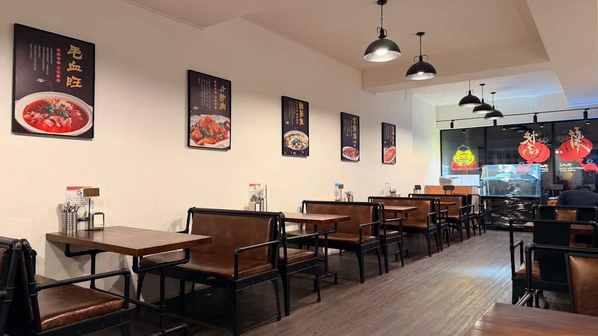

A SPRING FOOD BAR
A Spring Food Bar
An audience-focused digital marketing project combining strategic analysis, communication planning, and promotional video production.

An audience-focused digital marketing project combining strategic analysis, communication planning, and promotional video production.

A science communication project exploring how visual and character-based storytelling can make environmental information engaging.
A professional digital media kit designed to organise campaign information into clear, accessible materials for media audiences.